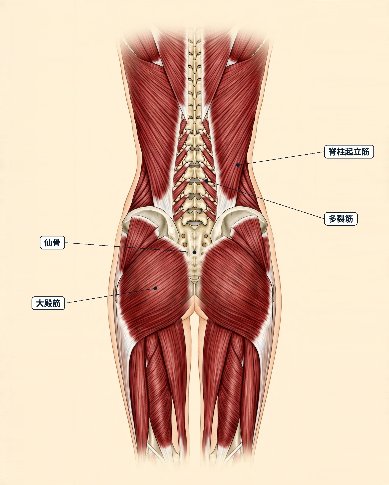
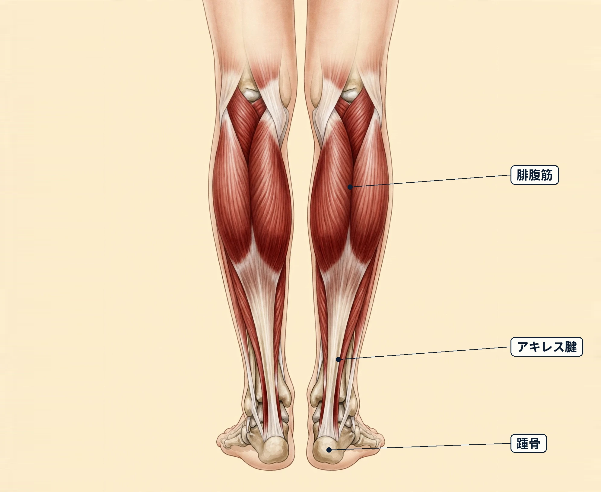

難波で生理前に気になる体の重だるさ｜要因の整理とセルフケア、受診の目安
ステラシリウス（大阪・難波／女性専用）ブログ
難波で生理前に気になる体の重だるさ｜要因の整理とセルフケア、受診の目安
１．生理前の体の重だるさとは
「生理が近づくにつれて、体全体が重く感じる」「脚や腰がだるい」「眠気が強く、やる気が出にくい」——生理前（月経前）に体の重だるさを感じる方は少なくありません。生理前の時期に心身の不調を感じやすい状態は、一般に「月経前症候群（PMS）」と呼ばれます。体の感じ方としては、重だるさやだるさのほか、むくみ感、下腹部の張り感、頭の重さ、肩や腰の張り、眠気などが挙げられ、気持ちの面では、いら立ちやすさや気分の落ち込み、集中しづらさなどを感じる方もいます。現れる時期や程度、組み合わせは人によってさまざまで、同じ方でも月によって違うことがあります。
感じ方だけで、その背景を特定することはできません。重だるさと一口に言っても、関係していることは一つとは限らず、いくつかのことが重なっている場合もあります。この記事では、生理前の体の重だるさの一般的な解説、考えられる要因の例、日常で取り入れやすいセルフケア、そして先に医療機関へ相談したい目安を整理します。あくまで一般的な情報としてお読みください。
２．考えられる要因
生理前に体の重だるさを感じやすくなる背景には、次のようなことが関係している場合があると言われます。
- 月経周期にともなうホルモンの変化：女性ホルモン（エストロゲン、プロゲステロン）の分泌は月経周期にあわせて変動し、この変動が生理前の心身の感じ方に関係すると考えられています。ただし感じ方には個人差が大きく、ホルモンの変化だけでは説明できない部分もあると言われます。
- 体内の水分のたまりやすさ：生理前は体に水分をため込みやすい時期と言われ、むくみ感や体重の増えた感じと一緒に、体の重さとして意識する方もいます。
- 眠りのリズムの変化：生理前は眠りが浅く感じたり、日中の眠気が強くなったりする方もいて、その影響でだるさを感じやすい場合があります。
- 体温のリズムの変化：排卵後から生理前にかけては基礎体温が高めの時期（高温期）が続き、その体感の変化が重だるさと一緒に気になる方もいます。
- 食事や生活リズムの偏り：忙しさで食事の時刻がずれる、甘いものや塩分の多い食事が続く、体を動かす機会が少ないといった日々が生理前の時期と重なると、感じ方が気になりやすい方もいます。
- 気持ちの緊張が続く場面：仕事の気がかりや予定の多さが続く時期は、体を休めている時間でも気持ちが休まりにくく、体の重さを強く意識する方もいます。
- 冷えや同じ姿勢の続き方：冷房の効いた室内で長く過ごすことや、座りっぱなし・立ちっぱなしが続く働き方が、脚の重さやだるさの感じ方に関係する場合があります。
これらは一例であり、当てはまるものがあっても、それがご自身の感じている重だるさの背景であると決めつけることはできません。
３．日常で取り入れられるセルフケア
どれも特別な道具はいりません。その日の体調に合わせて、無理のない範囲で続けやすいものから取り入れてみてください。腰まわりの筋肉と骨盤（図1）と、ふくらはぎの筋肉（図2）も参考にしてください。
- 感じ方の記録をつける：生理の開始日と、重だるさや眠気、気分の様子などを簡単にメモしておくと、ご自身の周期のパターンに気づきやすくなります。予定の立て方の参考になり、医療機関へ相談する際の材料にもなります。
- 眠りのリズムを意識する：できる範囲で就寝・起床の時刻をそろえる、寝る前の画面時間を区切るなど、夜の過ごし方を見直す方もいます。
- 湯船につかる：シャワーだけで済ませず、ぬるめのお湯につかって体を温める時間を、夜の過ごし方に取り入れる方もいます。
- 軽く体を動かす：通勤や買い物のついでに歩く時間をつくる、脚や腰まわりをゆっくり伸ばすなど、無理のない小さな動きを取り入れる方もいます。痛みが強まる動きは避けてください。
- 食事と水分のリズムを意識する：できる範囲で食事を抜かず、塩分や甘いものの取り方にも目を向ける方もいます。水分の量について医師から指示を受けている方は、その指示を優先してください。
- 予定にゆとりを持たせる：重だるさを感じやすい時期が分かってきたら、その時期は予定を詰め込みすぎない、早めに休む時間をつくるなど、過ごし方を調整する方もいます。
- 締めつけない服装を選ぶ：むくみ感が気になる日は、脚やお腹まわりを締めつけない服装を選ぶ方もいます。

図1 腰まわりの筋肉と骨盤腰は、背骨の両側を支える脊柱起立筋や多裂筋、お尻の大殿筋などが重なって支えています。骨盤の中央にある仙骨は、上半身の重みを受け止める土台です。生理前は、腰まわりの重さとして感じる方もいます。
図2 ふくらはぎの筋肉ふくらはぎの膨らみは腓腹筋がつくり、その深い層にはヒラメ筋が重なっています。歩くたびに伸び縮みして、脚の巡りを助けるポンプのような役割を果たします。体に水分をため込みやすい生理前は、脚の重さとして意識する方もいます。４．受診の目安（こんなときは医療機関へ）
次のような場合は、セルフケアやサロンでのケアより先に、婦人科などの医療機関への相談をご検討ください。
- 日常生活や仕事に支障が出るほど、重だるさや気分の波が強い
- 症状が毎周期のように繰り返し、つらさが続いている
- 生理が終わっても症状が続く、または生理の時期以外にも現れる
- 経血量が急に増えた、強い生理痛を伴う、周期が大きく乱れてきた
- 月経ではない時期の出血（不正出血）がある
- 気分の落ち込みが強く、長く続いている
- むくみが片脚だけに強く出る、息苦しさや胸の違和感を伴う
これらは一例です。生理前の不調と似た感じ方の背景に、婦人科の病気や、貧血、甲状腺など体の内側の不調が関係する場合もあると言われます。当てはまる場合や、少しでも気になる症状がある場合は、自己判断せず医療機関にご相談ください。服用中のお薬について気になることがある場合は、自己判断でやめず、処方した医師や薬剤師にご相談ください。
５．ステラシリウス（難波）のご案内
ステラシリウス（難波）は、月〜土 17:00〜22:00（日曜休み）に営業する女性専用サロンです。カウンセリングで当日のお悩みをうかがい、脚や腰、お腹まわりを含めた体の状態を見ながら、オイルマッサージと美容整体を組み合わせた90分 10,000円（税込）のコースをご用意しています。完全個室で、シャワー完備のため、施術の前後に汗やオイルを流してからお帰りいただけます。お仕事帰りの夜の時間に、体をほぐしてゆったり過ごす休息の時間としてご利用ください。なお、ステラシリウスは近日開院予定のため、ご予約の受付はまだ開始していません。また、当サロンはリラクゼーションを目的としたサロンで、医療行為は行いません。生理前の重だるさに関する治療を行うものではありませんので、「受診の目安」に当てはまる場合は、まず医療機関へご相談ください。
この記事をメインサイトで開く